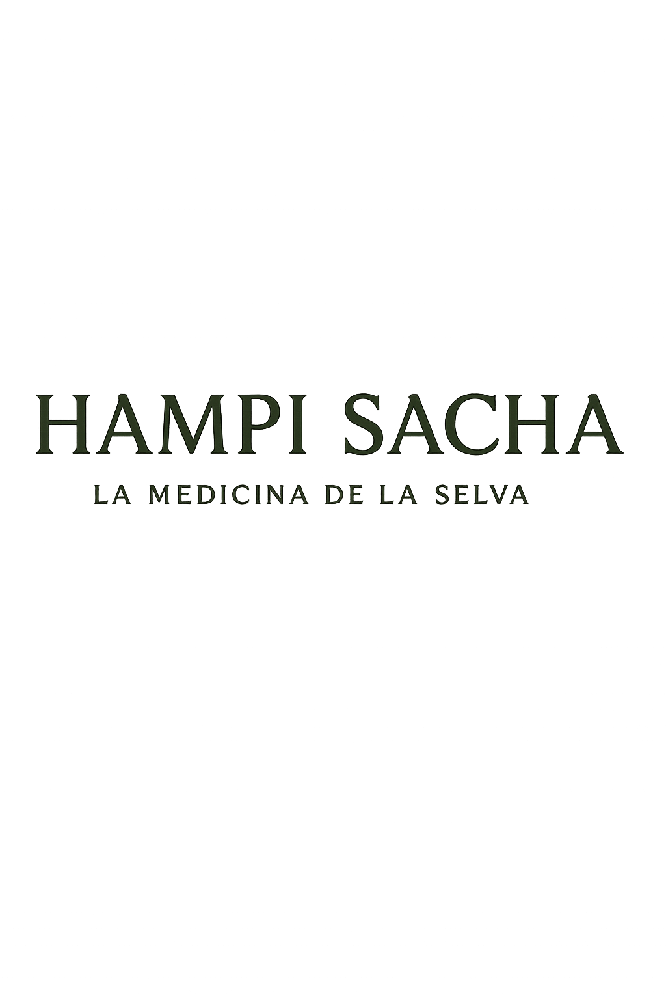

El bosque de Moyobamba tiene su propio ritmo.
Ven a encontrarlo.
Orquídeas que huelen distinto al amanecer, aguas termales a 42°C bajando por el cerro San Mateo, y una cascada que solo se llega a pie. Diseñamos experiencias reales en San Martín, guiadas por profesionales de la salud — no un retiro genérico con fondo de selva.
Descubre las experiencias Escríbenos